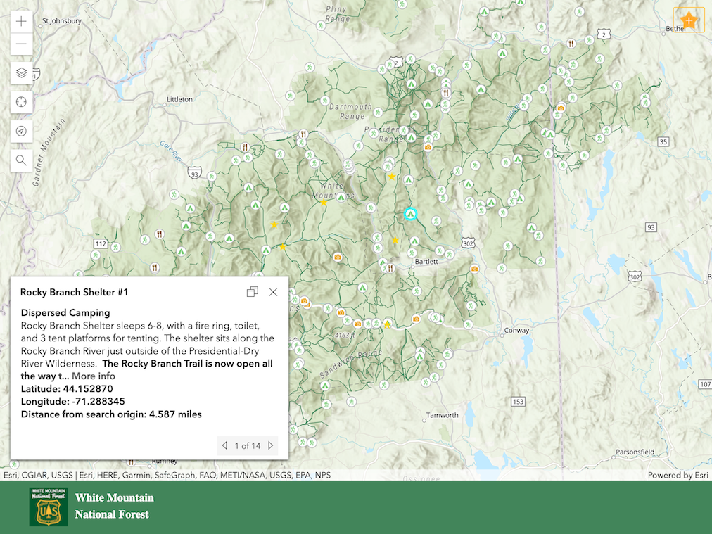

The White Mountain National Forest Discovery App is designed to inspire users to explore the park by finding and visiting activity sites and also recommending activity sites and unmarked locations to other people. The app is a mobile web mapping application built using the ArcGIS Javascript API with data stored on a Postgres/PostGIS database hosted by Carto. Users can see and research activity sites on the map, find activity sites near a location, and create reviews of sites and locations.
Full app available here.
